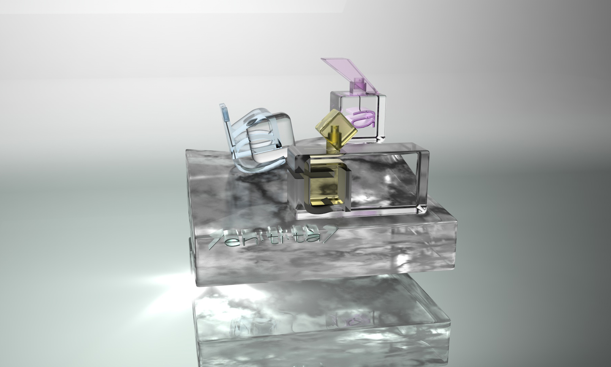
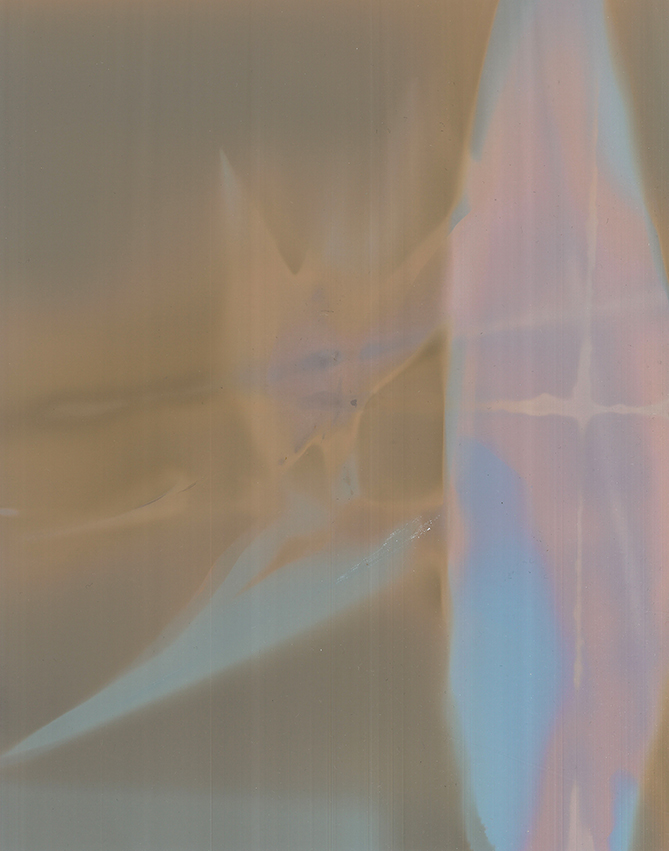
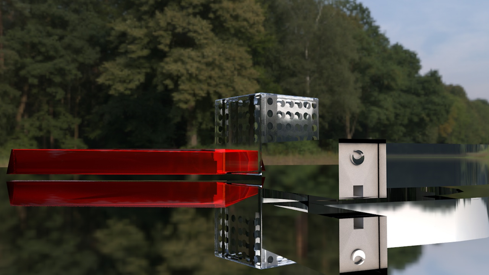
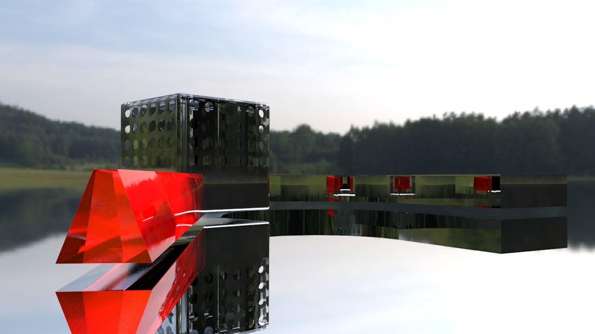
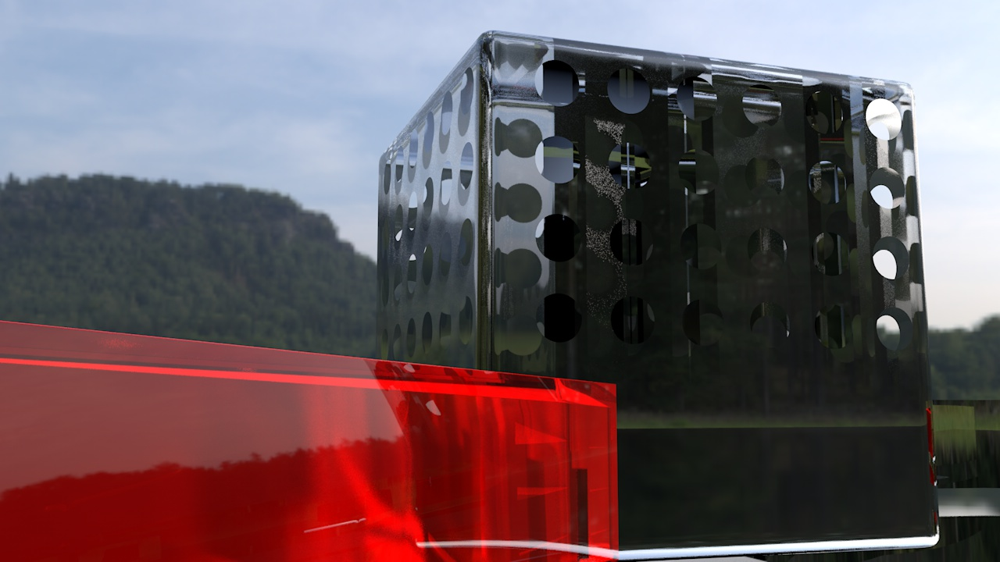
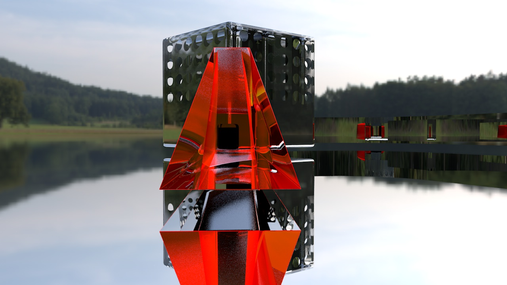
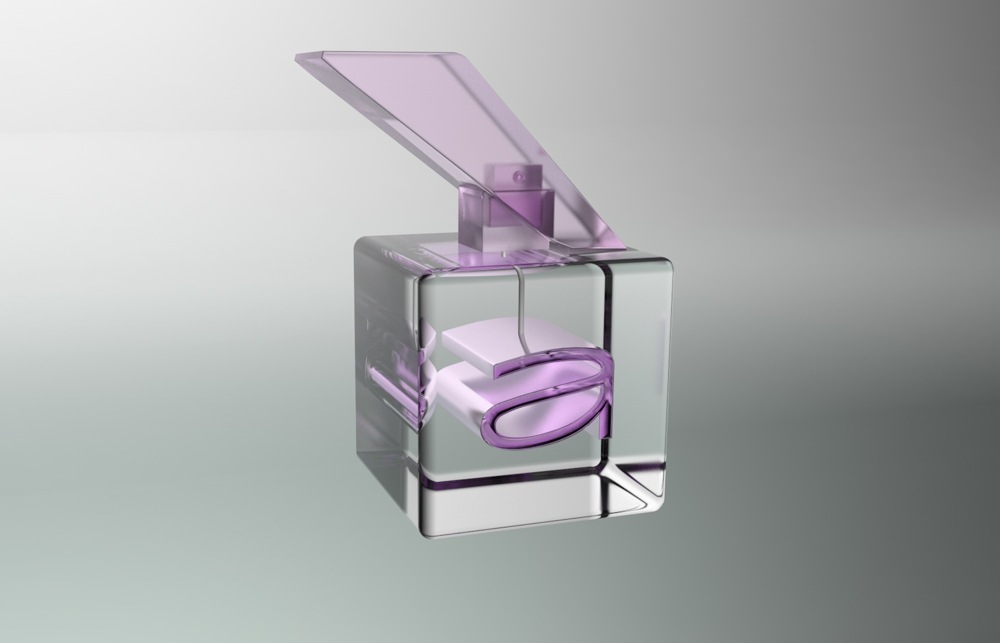
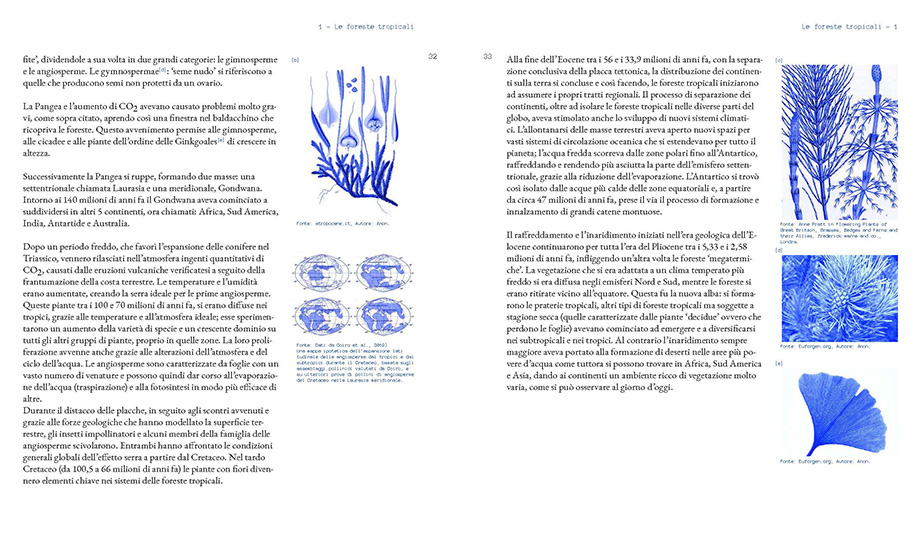
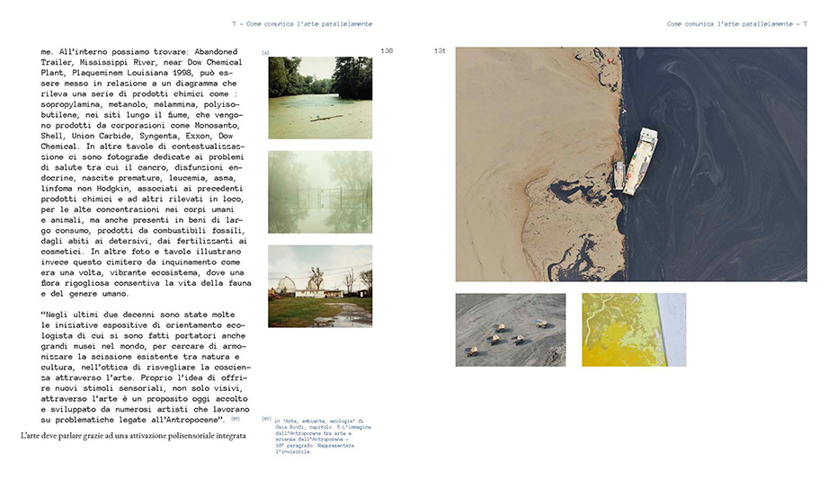

NOTE / 001Oggetti e memoria
Un oggetto nasce da una forma, ma acquista senso attraverso la relazione con chi lo osserva.
Un archivio aperto di immagini, sistemi visivi e sperimentazioni. Qui ogni progetto prende il tempo necessario per raccontare la propria origine, il processo e la materia che lo rende riconoscibile.
Un progetto digitale di Jacopo Doris, art director con base a Milano.


La luce non si limita a rendere visibile un oggetto: ne modifica la presenza, misura le distanze, disegna il confine tra ciò che riconosciamo e ciò che rimane sospeso.

Ogni superficie trattiene una traccia del mondo che la circonda. Il vetro accoglie il paesaggio e lo restituisce trasformato; la trasparenza, apparentemente neutra, diventa un linguaggio capace di rivelare molteplici profondità.
Questa ricerca visiva procede per variazioni minime: spostamenti di luce, mutamenti di scala, attriti fra materiali. La forma non è mai un elemento isolato, ma una relazione in continuo divenire.
TESTO EDITORIALE DI PROPOSTA — DA APPROVARE CON JACOPO


Il movimento come estensione della ricerca fotografica. Una sequenza breve, contemplativa, capace di trasformare un singolo dettaglio in un tempo da abitare.
Frammenti, annotazioni, osservazioni. Il racconto visivo non si esaurisce in un’immagine: continua nelle relazioni che quella immagine rende possibili.


NOTE / 001Un oggetto nasce da una forma, ma acquista senso attraverso la relazione con chi lo osserva.

NOTE / 002La pagina non è uno spazio da riempire: è il luogo in cui testo e immagine trovano una distanza necessaria.
Questa sezione legge i capitoli pubblicati attraverso JD Studio. Le bozze restano riservate al loro autore.
Verifica dei capitoli pubblicati…
Serie limitate, oggetti e superfici che diventano espressioni di un linguaggio visivo.
Art director e visual designer con base a Milano. Il suo lavoro indaga il rapporto fra identità, forma e racconto attraverso immagini, sistemi editoriali e direzione visiva.
INIZIA UNA CONVERSAZIONE